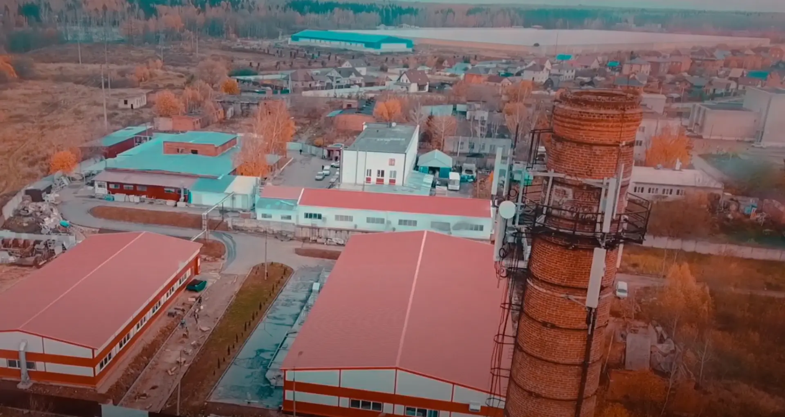

Главная / О компании
Разработка, производство и послепродажное обслуживание наукоёмких изделий из композиционных материалов, металла и стекла.
Тридцать четыре года непрерывной работы в наукограде Обнинск.
Часть технических решений не имеет аналогов в мире.
От 3D-проектирования до прессового формования армированных термопластов.
Сертификат соответствия № 31100779 QM15.

Производственный персонал предприятия принимал активное участие в создании космического корабля многоразового использования и интерьеров салонов пассажирских самолётов. Эта школа работы с композитами и лежит в основе всего, что мы делаем сегодня.
Группа предприятий «ПОЛЁТ» расположена на территории Калужской области в городе Обнинске. Высокий потенциал и успехи компании во многом обусловлены научно-техническими традициями города — первого в России города науки, получившего статус наукограда.
Обнинск — современный развивающийся город с населением около 110 000 человек, в 100 километрах к юго-западу от Москвы по Киевскому шоссе. Именно здесь находится первая в мире атомная электростанция, выведенная из эксплуатации в 2002 году и поэтапно преобразуемая в музей.
Сегодня наукоград — это созвездие десяти научно-исследовательских институтов физического, химического, медицинского, метеорологического, сейсмологического и сельскохозяйственного профиля. Открытость города способствует широким научным контактам и интеграции знаний в мировом масштабе.

Разработка, производство и послепродажное обслуживание наукоёмких изделий из композиционных материалов, металла и стекла на конкурентоспособном уровне.
Высокий профессионализм и производственный опыт сотрудников, накопленный с 1991 года, позволяет разрабатывать и изготавливать новые виды продукции в кратчайшие сроки, на высоком научно-техническом уровне и в полном соответствии с растущими требованиями заказчика. Часть технических решений не имеет аналогов в мире и защищена более чем 20 патентами.
Стратегия ГП «ПОЛЁТ» состоит в укреплении позиции на рынке, диверсификации производства, повышении эффективности деятельности предприятия и благосостояния сотрудников — за счёт продукции, удовлетворяющей и предвосхищающей потребности заказчика.
При достижении стратегических целей предприятие опирается на:
Девятнадцать технологий — полный перечень. Подробно о каждой на странице «Производство».
Основная цель предприятия в области качества — выпуск качественной конкурентоспособной продукции за счёт контроля на всех стадиях изготовления, улучшения качества труда, повышения производительности и снижения потерь от брака.
Соответствие системы менеджмента качества требованиям ИСО 9001:2015 подтверждено сертификатом соответствия за № 31100779 QM15. Система распространяется на процедуры управления и производственные процессы применительно к разработке, проектированию и производству изделий из композиционных материалов, металла и стекла.

Пришлите техническое задание или просто опишите задачу — подберём технологию и оценим сроки.